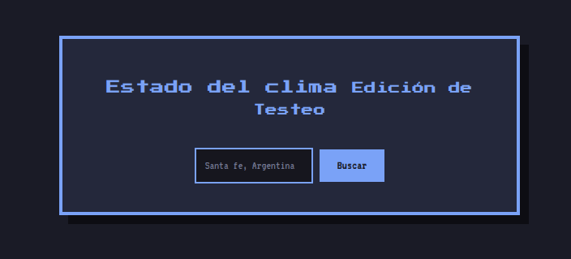

Valentin, Eberhardt.
Tester enfocado en la calidad de Software
Realizo testeo esencial de APIs con Postman, además de reportes detallados de errores/bugs de UI y funcionalidad.
Estrategia de Pruebas: Aplicación Web Clima
En esta seccion voy a presentar una pequeña demostración de mis métodos a la hora de testear usando una aplicación de prueba creada para este propósito.
La aplicación a testear consume la API Open-Meteo lo que le permite mostrar datos meteorológicos de la ciudad que se inserte en el cuadro de búsqueda.
Cabe destacar que el análisis será abordado desde la perspectiva de un tester que tiene disponible los requerimiento funcionales de la aplicación, se aplicaron técnicas de black box testing para asegurar que la lógica y la interfaz responden según lo esperado
Criterio de Mejora: Algunos casos marcados como "Pasa" incluyen observaciones. Esto se debe a que, aunque cumplen con la función técnica, existen oportunidades para optimizar la UX y la eficiencia del flujo.Si desea probar la aplicación por su cuenta a la par de la lectura de los casos de prueba, puede encontrarla en la pestaña de proyectos o haciendo click aquí
Por último, si quiere la versión más detallada de los casos de prueba haga click aquí
| ID | Descripcion | Estado | Prioridad | Pasos para reproducir | Resultado Esperado | Bug report |
|---|---|---|---|---|---|---|
| TC-01 | Input en el buscador (Datos válidos) | Falla | Alta |
|
|
|
| TC-02 | Input en el buscador (Datos inválidos) | Pasa | Alta |
|
|
|
| TC-03 | Input en el buscador (Datos nulos) | Pasa | Alta |
|
|
- |
| TC-04 | Boton Toggle C°/F° | Falla | Alta |
|
|
Proyectos
Haz click para ver detalles

Proyecto Web para Demo Testeo
Proyecto diseñado para una demostracion de diseños de casos de prueba y reportes de bugs consumiendo la API de Open-Meteo
Herramientas que utilizo en mis proyectos
JavaScript
Utilizado para creación de interfaces dinámicas
Google Sheets
Diseño de Casos de Prueba y Reportes de Bugs detallados
Python
- Creacion de scripts de automatización
Postman
- Validación de APIs
Comentarios:
Cuando se ingresa un dato inválido ("%, #, $") y se clickea buscar, el programa trata de buscar los caracteres inválidos en la base de datos de la API. ¿Es esto correcto? Personalmente opino que si se detectan caracteres inválidos antes de realizar la acción de Buscar, el proceso sería más eficiente.
Evidencia:
Ver video